Portefeuille Bitcoin : Review du Ledger Nano S
Il y à de ça plusieurs mois, je vous avais fait une présentation du portefeuille bitcoin de chez Ledger, le Nano premier du nom. Entre le moment où je l’avais commandé et celui où ma review était sortie, son petit frère le nano S avait vu le jour.
Étant toujours aussi content de mon Nano et souhaitant y « stocker » (on ne stock pas ses crypto-monnaies dessus à proprement parler) mes autres devises, je me suis donc procuré son successeur.
Voilà maintenant quelques temps que je l’utilise, et comme promis la dernière fois, voici mon rapport !
Fiche de présentation
Nom : Ledger Wallet Nano S
Qu’est ce que c’est : Un portefeuille physique de Bitcoin, Ethereum et autres altcoins. D’autres fonctions s’ajoutent avec le temps, SSH, PGP, et plus encore.
Compatible : Window, MacOS, Linux, Android.
Fabriquant : Ledger
Prix : 69.60€.
Date de sortie : 2016.
Où l’acheter : Directement sur le site de Ledger, acceptant les paiements en Bitcoin et bientôt en Ethereum en plus des classiques CB & Paypal.
Packaging
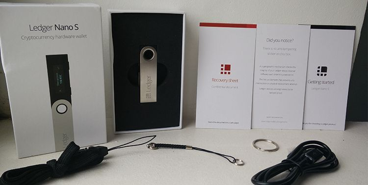
La partie inutile donc indispensable, voici le contenu de notre chère boite :
- Le Nano S (encore heureux)
Avec ses 6cm x 1.75cm notre précieux fait plus ou moins la même taille qu’une clef USB oldschool.
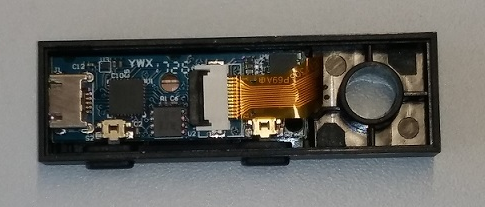
Si le cœur vous en dit, le site du fabricant proposant des vues intérieures de leur produit, vous pouvez donc l’ouvrir et vérifier que vous disposez bien d’une version non trafiquée.
- Feuillet de restauration
Afin de noter votre phrase de récupération, indispensable en cas de dégradation, perte ou vol de notre Nano S.
- Tour de cou
Qui utilise ça ?
- Anneau et chaine porte clef
Là je dis oui.
Windows & Mac OS
- Installez Chrome ou Chromium
- Telechargez les applications depuis le site de Ledger
Et c’est tout, rien de compliqué pour vous !
Linux
Bien évidemment, vous passez par la case Chromium et applications de Ledger aussi.
En plus de cela, comme pour la version précédente du Nano, il faudra utiliser un petit script afin d’ajouter des règles udev :
#!/bin/bash
echo "SUBSYSTEMS==\"usb\", ATTRS{idVendor}==\"2581\", ATTRS{idProduct}==\"1b7c\", MODE=\"0660\", GROUP=\"plugdev\", OWNER=\"VOTRE_UTILISATEUR\"" >/etc/udev/rules.d/20-hw1.rules
echo "SUBSYSTEMS==\"usb\", ATTRS{idVendor}==\"2581\", ATTRS{idProduct}==\"2b7c\", MODE=\"0660\", GROUP=\"plugdev\", OWNER=\"VOTRE_UTILISATEUR\"" >>/etc/udev/rules.d/20-hw1.rules
echo "SUBSYSTEMS==\"usb\", ATTRS{idVendor}==\"2581\", ATTRS{idProduct}==\"3b7c\", MODE=\"0660\", GROUP=\"plugdev\", OWNER=\"VOTRE_UTILISATEUR\"" >>/etc/udev/rules.d/20-hw1.rules
echo "SUBSYSTEMS==\"usb\", ATTRS{idVendor}==\"2581\", ATTRS{idProduct}==\"4b7c\", MODE=\"0660\", GROUP=\"plugdev\", OWNER=\"VOTRE_UTILISATEUR\"" >>/etc/udev/rules.d/20-hw1.rules
echo "SUBSYSTEMS==\"usb\", ATTRS{idVendor}==\"2581\", ATTRS{idProduct}==\"1807\", MODE=\"0660\", GROUP=\"plugdev\", OWNER=\"VOTRE_UTILISATEUR\"" >>/etc/udev/rules.d/20-hw1.rules
echo "SUBSYSTEMS==\"usb\", ATTRS{idVendor}==\"2581\", ATTRS{idProduct}==\"1808\", MODE=\"0660\", GROUP=\"plugdev\", OWNER=\"VOTRE_UTILISATEUR\"" >>/etc/udev/rules.d/20-hw1.rules
echo "SUBSYSTEMS==\"usb\", ATTRS{idVendor}==\"2c97\", ATTRS{idProduct}==\"0000\", MODE=\"0660\", GROUP=\"plugdev\", OWNER=\"VOTRE_UTILISATEUR\"" >>/etc/udev/rules.d/20-hw1.rules
echo "SUBSYSTEMS==\"usb\", ATTRS{idVendor}==\"2c97\", ATTRS{idProduct}==\"0001\", MODE=\"0660\", GROUP=\"plugdev\", OWNER=\"VOTRE_UTILISATEUR\"" >>/etc/udev/rules.d/20-hw1.rules
udevadm trigger
udevadm control --reload-rules
N’oubliez pas de remplacer VOTRE_UTILISATEUR par le bon nom de compte.
Qubes OS
Quelques petites précisions si, comme moi, vous utilisez Qubes OS.
Si vous utiliser une VM sys-usb, sachez qu’à chaque entrée-sortie d’une application sur le Nano S, la connexion USB est réinitialisée donc il faudra à chaque fois relancer un :
qvm-usb TemplateVM sys-usb:x-x
Où TemplateVM est la VM où vous avez choisis d’installer les applications ledger, sys-usb le nom de votre VM usb et x-x l’identifiant de votre Ledger, pour le connaître faites :
qvm-usb
Et le tour est joué.
Les applications Chrome
Ledger Manager
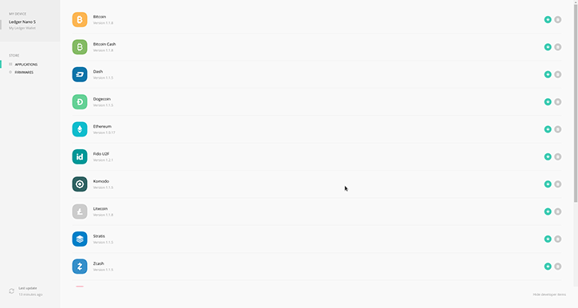
Permet de gérer les applications installées sur votre Nano S ainsi que les mises à jours de son firmware. Simple et efficace, je regrette cependant qu’on ne voit pas à l’écran la liste des applications installées, pour ça nous devons nous référer à la liste des applications sur notre joujou.
Ledger Wallet Bitcoin & Altcoins
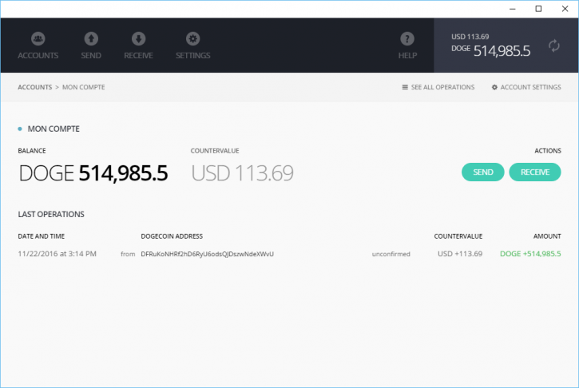
Permet de gérer les portefeuilles du Nano S autre que Ethereum (et ses tokens) & Ripple, soit : Bitcoin, Bitcoin Cash, Dash, Dogecoin, Komodo, Litecoin, Stratis, Zcash, PoSW.
Vous devez dans un premier temps choisir quelle crypto-monnaie vous souhaitez utiliser dans le menu de votre Nano S.
A son lancement, l’application Chrome choisira quel portefeuille afficher automatiquement.
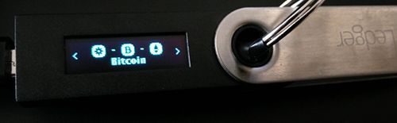
Tout comme sur le Nano premier du nom nous pouvons créer plusieurs comptes. J’aime beaucoup cette fonctionnalité, on peut ainsi scinder nos fonds à la manière des livrets dans les banques. On pourrait imaginer dans le futur en avoir un pour le salaire, un pour les factures, un pour les vacances, un pour les courses…
Ledger Wallet Ethereum
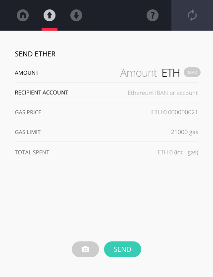
Permet de gérer votre portefeuille Ethereum ainsi qu’Ethereum classic, à chaque connexion vous pourrez choisir la chaîne qui vous intéresse. Je regrette que contrairement à l’application Bitcoin, nous ne pouvons pas encore créer de comptes distincts dans l’interface.
Bonne nouvelle : cela arrivera bientôt.
Ledger Wallet Ripple
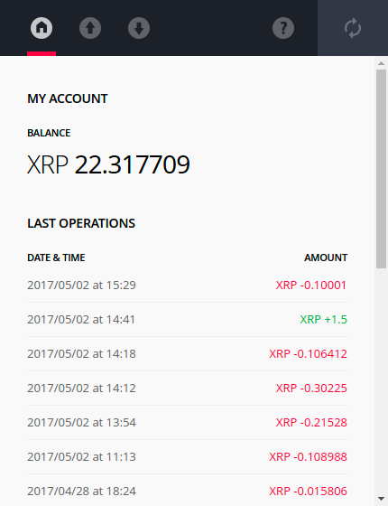
Pour gérer votre portefeuille Ripple, l’interface est la même que l’application Ethereum.
Les applications du Nano S
Ark, Bitcoin, Bitcoin Cash, Bitcoin Gold, Dash, Digibyte, Dogecoin, Ethereum, Hcash, Komodo, Litecoin, Neo, Ripple, Stratis, Stealthcoin, Zcash, Ubiq, PivX, PoSW, ViaCoin, VertCoin, Qtum
Permet de gérer les portefeuilles de ces monnaies. Notez qu’une fonction « browser plugin » est disponible pour certaines, permettant par exemple de vous identifier sur le site de myetherwallet.
Ainsi vous pourrez aussi gérer vos tokens ERC-20.
J’avais beaucoup de mal à l’idée de faire un copier/coller de ma clef privée dans un navigateur lorsque je souhaitais gérer certains tokens, un confort en plus, un problème en moins !
Fido U2F
The Universal 2nd Factor, un standard initié & géré par la FIDO (Fast IDentity Online) Alliance. Il s’agit simplement d’une fonction de double authentification utilisant un périphérique USB.
Ainsi vous pouvez utiliser votre Nano S en guise de double authentification au lieu de votre numéro de téléphone, ce qui est très intéressant aux vues des derniers soucis rencontrés par la solution SMS.
Hello
Windows Hello est une nouvelle fonctionnalité de Windows 10, permettant l’identification de sa session grâce à son iris ou son empreinte digitale. Grâce à cette application c’est le Nano S qui permet de se connecter et non plus un « morceau de vous ».
A venir
En fouillant dans les applications en test ainsi que sur le Github de Ledger et leur roadmap Trello nous pouvons nous apercevoir que les applications et fonctionnalités suivantes vont voir le jour, les 3 premières sont disponibles en version développeur, de ce fait je préfère attendre une release officielle avant de m’en servir sérieusement et de vous en faire un retour.
- OpenPGP
Une application implémentant les spécifications de l’OpenPGP card 3.0 permettant de stocker trois clefs privées, une pour (dé)chiffrer, une pour signer et une clef pour s’authentifier
Ainsi, toutes les opérations nécessitant une de ces clefs sont réalisées directement sur le Nano S. L’ordinateur lui envoie les données à (dé)chiffrer, signer ou authentifier et il reçoit le résultat de l’opération en retour, sans accéder directement aux clefs.
Pour plus d’infos sur le protocole je vous invite à lire l’article de linuxfr.
- SSH/PGP Agent
Un agent SSH & PGP compatible avec le même client Trezor.
- Password Manager
Pour faire simple votre Nano S se transforme en gestionnaire de mot de passe, de la génération au stockage en ajoutant la possibilité d’interagir avec votre ordinateur ou téléphone en tant que clavier afin de taper les mots de passes demandés.
- Monero
Depuis quelques temps sur leur Github, une version alpha du portefeuille Monero a été annoncé pour septembre.
- Multiple compte Ethereum
Comme je le disais un peu plus haut, c’est ce qui manquait à l’application.
- Compatibilité Jaxx
Ça c’est du lourd ! Étant un utilisateur de Jaxx sur mobile j’adore leur application, la gestion de plusieurs devises ainsi que l’intégration avec Shapeshit permettant de se passer d’une partie des plateformes d’exchanges, pouvoir l’utiliser avec le Nano serait vraiment un gros plus !
Déroulé d’une transaction
Regardons ensemble le déroulé d’une transaction.
- Connexion et déverrouillage
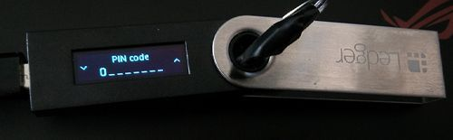
Tout d’abord nous connectons le Nano S à l’ordinateur. Il nous demande alors notre code PIN (4 à 8 chiffres) définis au moment de l’initialisation de l’appareil.
- Accès au portefeuille
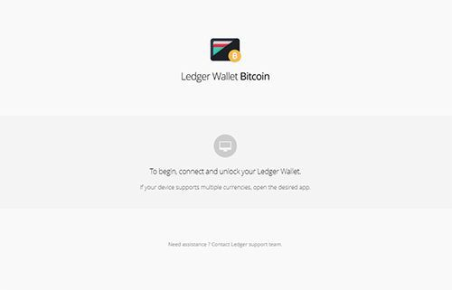
Nous lançons sur l’ordinateur l’application le portefeuille qui nous intéresse, ici Bitcoin.
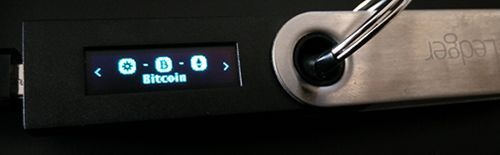
Nous sélectionnons ensuite la même application sur le Nano S. Une pression sur les boutons de l’appareil pour valider.
- Notre portefeuille
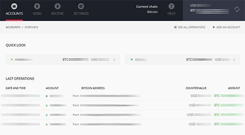
Notre portefeuille se déverrouille alors et nous pouvons voir le solde de nos comptes.
Rendez vous dans la partie « SEND » pour envoyer des fonds.
- La transaction
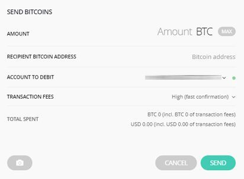
Ici nous devons choisir :
- Le montant à envoyer
- Le destinataire
- Le compte à débiter
- Le montant de nos frais
Nous pouvons aussi cliquer sur l’icône photo en bas à gauche afin de scanner un QR code. Une fois tout cela fait, le portefeuille vous demandera de confirmer la transaction, sur votre Nano S.
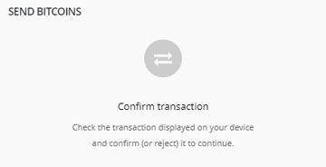
Rendez-vous alors sur votre appareil où sera récapitulé :
- Le montant de la transaction
- L’adresse destinataire
- Le montant des frais
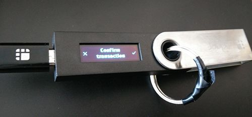
Une simple pression sur le bouton de validation et voilà votre transaction confirmée par votre appareil !
Compatibilité mobile
Tout comme le Nano premier du nom, le Nano S est compatible avec les appareils mobiles, le déroulé des transactions est également très simple, comme sur ordinateur. Liste des applications compatibles :
Android
Sur Android, vous pouvez utiliser les applications suivantes afin de gerer vos Bitcoin:
- Greenbits
- GreenAddress
- Mycellium
Vous pouvez aussi utiliser MyEtherWallet avec Google Chrome afin de gérer vos Ethers & tokens ERC20.
iOS
Impossible, les applications iOS ne permettant pas de communiquer via les standards universal USB. Si vous êtes intéressés par un système mobile plus flexible, vous devez quitter le monde iPrivateur. La seule solution serait d’extraire vos clefs privées de votre appareil pour les importer dans un portefeuille standard iOS, ceci annulant toutes utilités du Nano S.
Des bémols ?
Pour finir, j’ai noté quelques légers bémols, regardons ensemble.
Pochette de protection
Comme tout périphérique USB en plastique, j’ai un peu peur à la solidité de l’objet. Cela dépend entre autres de votre utilisation de celui-ci. L’avoir toujours sur soit comme un réel portefeuille ? Le laisser dans un coffre ?
De base la structure en aluminium sert à protéger l’écran mais j’aurai aimé une protection supplémentaire pour les personnes le transportant relativement souvent, une housse ou quelque chose du genre.
En attendant j’ai 10 doigts des ciseaux et du scotch, donc j’ai fais ça à partir d’une protection de disque dur externe :
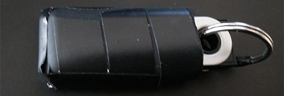
Problème résolue ! Il y a aussi des personnes qui voient beaucoup plus grand et ont déjà commencé à designer des boîtiers 3D :
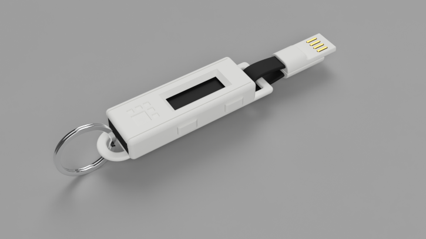
Source : Reddit
Vivement que ça soit disponible !cryptomonnaie
Espace limité
Le nombre d’applications pouvant être installées simultanément est limité à environs 4-5 à cause de la mémoire de l’appareil. Étant donné que pas mal de code est dupliqué Ledger compte optimiser et grouper certaines d’entre-elles dans le futur, résolvant le problème de limitation.
En attendant il est possible d’installer une application et de la supprimer après l’avoir utiliser puis de la réinstaller lorsque nous avons à nouveau besoin de nous en servir. Les clefs privées n’étant pas supprimées lors de ces manipulations, aucune devise n’est perdue. Source: CTO de Ledger.
Fin du rapport ! Si vous avez des questions à propos du Nano S ou des astuces à partager rendez-vous dans les commentaires.
Bonne navigation sur les internets !